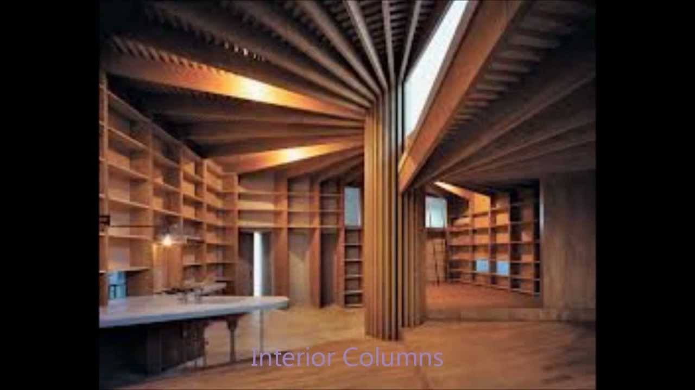

Home - Nazza Interior Design
NAZZA
INTERIOR DESIGN IDEAS
Home Design Interior Bucatarie Living Dormitor Camera copiilor Baie Home Tour Design Exterior Gradina Balconul Arhitectura Tech Ultimele colectii Lifestyle About Home Design Interior Bucatarie Living Dormitor Camera copiilor Baie Home Tour Design Exterior Gradina Balconul Arhitectura Tech Ultimele colectii Lifestyle AboutNAZZA
INTERIOR DESIGN IDEASCanapeaua si regulile de plasare a mobilierului in living
Declutter your home: Cum sa scapi de lucrurile inutile din casa?
Ce sa faci cand te plictisesti? 20 de Proiecte Gratuite in vreme de Coronavirus
Leroy Merlin a decis sa inchida temporar toate magazinele din Romania
Renovarea Apartamentului Nana, Lisabona
IFA 2019 TOP 5 INOVATII SMART HOME
Apartament de burlacita in fascinantul Singapore
Apartamentul Minimalist
Apartamentul Lumiere
Design Interior: Casa de Familie
Tendinte in amenajarea bailor in 2019
Decoreaza gradina cu ghirlande luminoase
Amenajare apartament modern Interviu Maria Novikova
Design de apartament cu Roman Lysenko
5 Sfaturi pentru o bucatarie actuala
Colectarea selectiva a deseurilor
Culorile in designul interior
Culorile, notiuni de baza
Load moreFollow me on instagram
View on Instagramfollow me on social media
© nazzainteriordesign 2019
instanazza@gmail.com